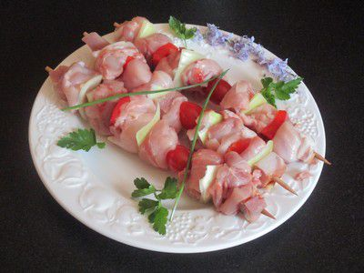
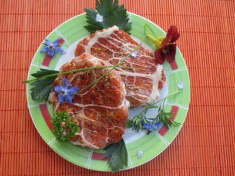
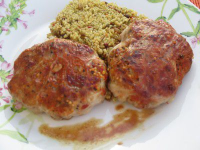

La ferme du Clos Vieuville est située aux Portes de la Bretagne
A deux pas du château de Mme de Sévigné, près de Vitré, à 4 km de l'autoroute.
Notre exploitation agricole s’est développée dans l’élevage de lapins depuis 1975.
Au printemps 2001, nous avons évolué vers un service supplémentaire de notre activité de production, à savoir la commercialisation, via la transformation.


